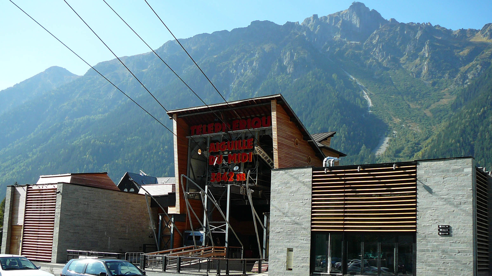
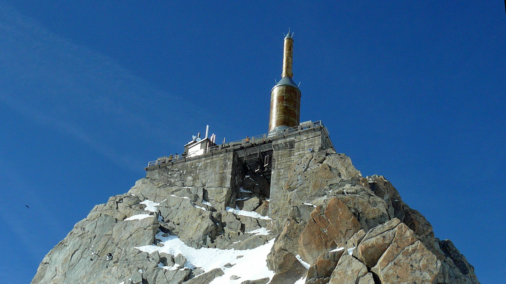
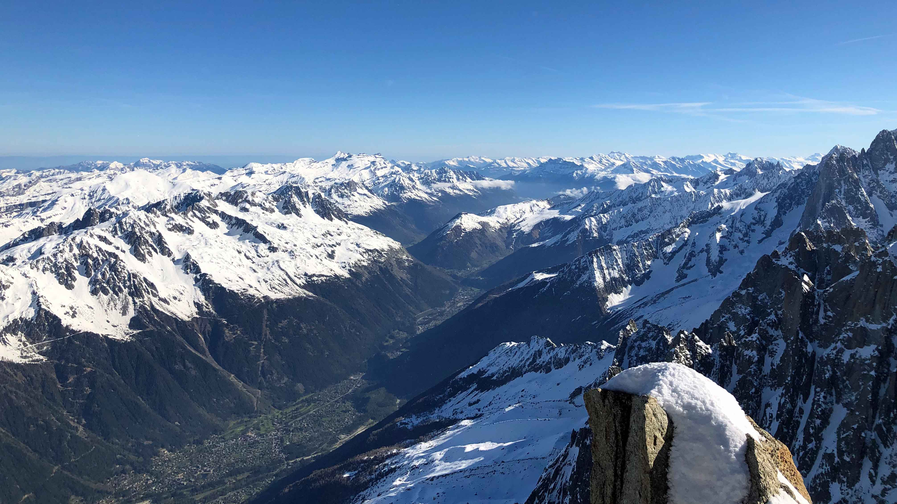
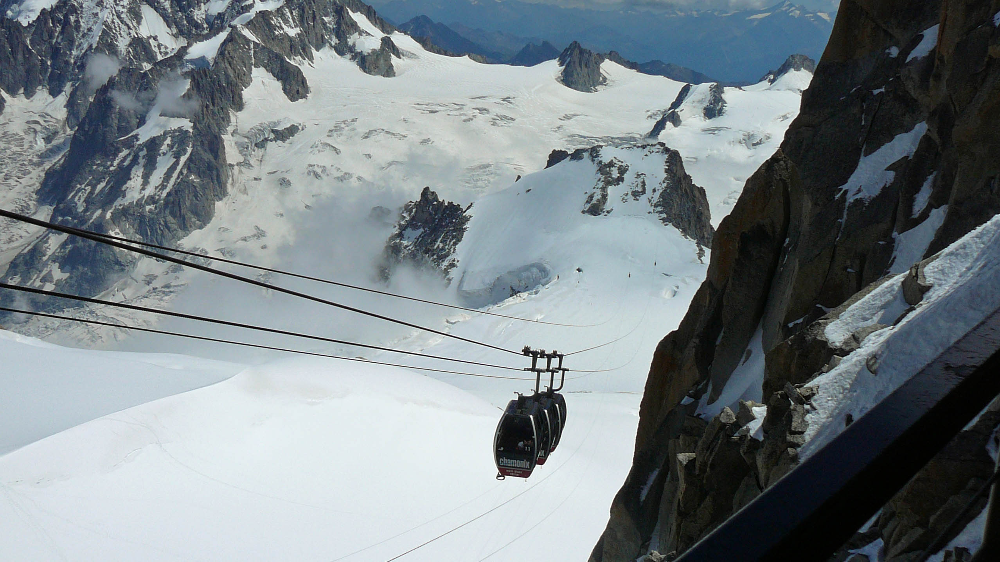
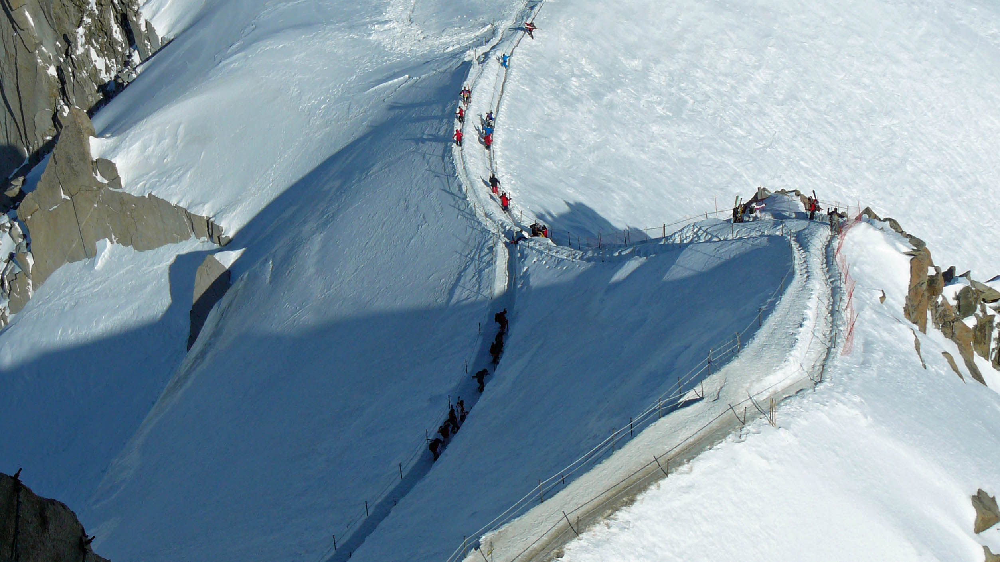
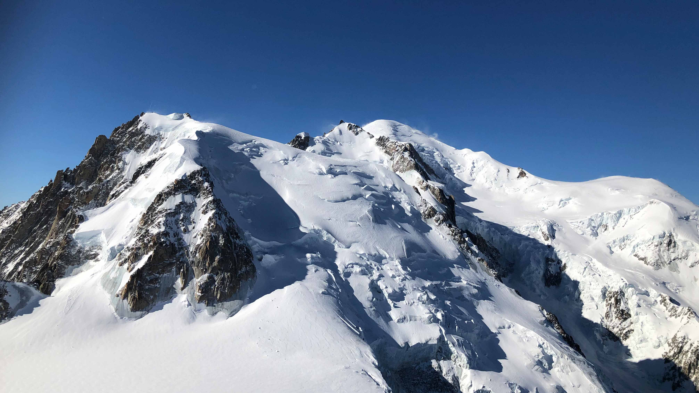
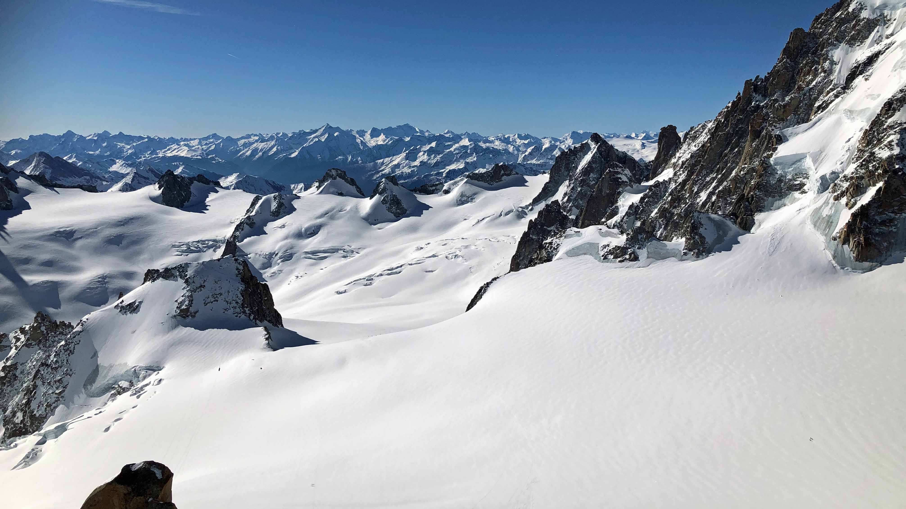

Aiguille du Midi
L'un des plus haut téléphérique du monde
Si vous ne devez faire qu'une seule excursion à Chamonix c'est celle çi ! Un site uniquement et vraiment extraordinaire.
Le téléphérique est ouvert tout les jours de mi décembre à début novembre.
Composé de deux tronçons, ce téléphérique vous permet de rejoindre la gare sommitale à 3777m d'altitude en une vingtaine de minute.
Après avoir traversé une passerelle entre le piton nord et le piton central, un ascenseur vous permettra de gravir les derniers mettre jusqu'à la terrasse sommitale.
Le téléphérique est ouvert tout les jours de mi décembre à début novembre.
Composé de deux tronçons, ce téléphérique vous permet de rejoindre la gare sommitale à 3777m d'altitude en une vingtaine de minute.
Après avoir traversé une passerelle entre le piton nord et le piton central, un ascenseur vous permettra de gravir les derniers mettre jusqu'à la terrasse sommitale.

Gare de départ du téléphérique
Terrasses vue Mont Blanc
Arrivée sur la terrasse sommitale, vous pourrez profiter d'une vue grandiose sur le Mont Blanc, la Vallée Blanche, et beaucoup d'autres sommets des Alpes. Si vous en avez le courage, essayer le "pas dans le vide". Il s'agit d'une cabine entièrement vitrée, accessible depuis cette terrasse. avec vue sur le Mont Blanc. Sensations fortes garanties !
D'autre terrasses sont à votre disposition sur le site, sur le piton central (là ou se trouve l'ascenseur) ou bien sur le piton nord (là ou se trouve la gare d'arrivée du téléphérique).
Vous trouverez aussi une boutique et deux points de restauration sur le piton nord.
D'autre terrasses sont à votre disposition sur le site, sur le piton central (là ou se trouve l'ascenseur) ou bien sur le piton nord (là ou se trouve la gare d'arrivée du téléphérique).
Vous trouverez aussi une boutique et deux points de restauration sur le piton nord.

Terrasse sommitale

Vue sur Chamonix depuis le sommet
Télécabine de La Vallée Blanche
La visite à l'Aiguille du Midi vous permettra d'apercevoir la célèbre Vallée Blanche, cette immensité glacière au pied du Mont Blanc. Pour une meilleure vue, je vous conseille de vous diriger vers les terrasses situées au sud.
Une télécabine, ouverte uniquement en été, permet de la parcourir à travers un trajet de 5km et 40 minutes jusqu'à la point d'Helbronner en Italie. Paysages à couper le souffle pendant tout le trajet. Prévoyez au moins 2h de plus vous cette visite (1h30 de télécabine aller/retour + temps de viste à la Pointe d'Helbronner).
Une télécabine, ouverte uniquement en été, permet de la parcourir à travers un trajet de 5km et 40 minutes jusqu'à la point d'Helbronner en Italie. Paysages à couper le souffle pendant tout le trajet. Prévoyez au moins 2h de plus vous cette visite (1h30 de télécabine aller/retour + temps de viste à la Pointe d'Helbronner).

Télécabine de la Vallée Blanche
La Vallée Blanche à ski
La Vallée Blanche, c'est aussi un magnifique itinéraire à ski. A faire accompagner d'un guide de haute montagne.
Cet itinéraire magnifique présente néanmoins une grosse difficulté: la descente de l'arrête de l'Aiguille du Midi (voir photo). Une alternative est possible au départ d'Helbronner, en enprumtant le téléphérique Monte Bianco au départ de Courmayeur en Italie.
Cet itinéraire magnifique présente néanmoins une grosse difficulté: la descente de l'arrête de l'Aiguille du Midi (voir photo). Une alternative est possible au départ d'Helbronner, en enprumtant le téléphérique Monte Bianco au départ de Courmayeur en Italie.

Arrête de l'Aiguille du Midi

Vue sur le Mont Blanc depuis l'Aiguille du Midi

Vue sur la Vallée Blanche depuis l'Aiguille du Midi